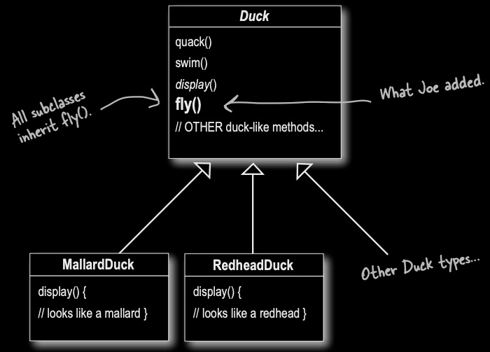
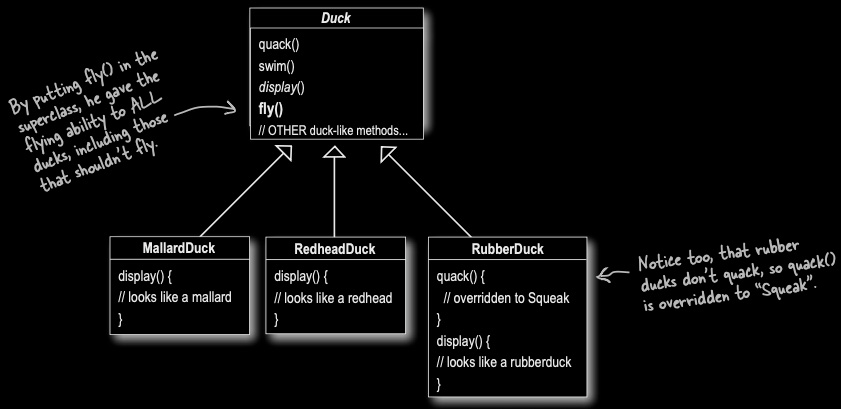
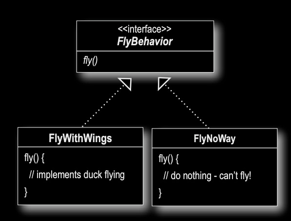

Strategy defines a family of algorithms, encapsulates each one, and makes them interchangeable. Strategy lets the algorithm vary independently from clients that use it. — Gang of Four, Design Patterns (1994)
Encapsulate what varies
Favor composition over inheritance
Program to interfaces (abstractions), not implementations
In the Beginning...

UML class diagram for the Duck implementation. (Source: Eric Freeman and Elisabeth Robson, Head First Design Patterns, O'Reilly Media).
UML class diagram showing the Duck superclass after Joe added fly(). A superclass named Duck contains the methods quack(), swim(), display() (italicized), and fly() (bold, indicating it was added). A handwritten annotation on the right points to fly() and reads: What Joe added. Two subclasses inherit from Duck via inheritance arrows: MallardDuck (overrides display() to show it looks like a mallard) and RedheadDuck (overrides display() to show it looks like a redhead). A handwritten annotation on the left reads: All subclasses inherit fly(). A handwritten annotation on the right near the subclasses reads: Other Duck types...
All Is Fine... Until It's Not

UML class diagram for the Duck implementation. (Source: Eric Freeman and Elisabeth Robson, Head First Design Patterns, O'Reilly Media).
UML class diagram showing the Duck inheritance hierarchy with a bug introduced by adding fly(). A superclass named Duck contains the methods quack(), swim(), display() (italicized), fly(), and a note indicating other duck-like methods. Three subclasses inherit from Duck via inheritance arrows: MallardDuck (overrides display() to show it looks like a mallard), RedheadDuck (overrides display() to show it looks like a redhead), and RubberDuck (overrides both quack() to squeak and display() to show it looks like a rubber duck). A handwritten annotation on the left reads: By putting fly() in the superclass, he gave the flying ability to ALL ducks, including those that shouldnt fly. A handwritten annotation on the right reads: Notice too, that rubber ducks dont quack, so quack() is overridden to Squeak.
We Embrace Change
We should try to make our designs “goof proof”
But...
We can’t anticipate every possible thing
We shouldn’t add unneeded complexity
YAGNI: You Aren’t Gonna Need It
We Embrace Change
RubberDuck subclass wants to fly() in a different way
The “fix” must minimize changes needed as other new Duck subclasses want to fly() in different ways
What are the design options?
Option 1: Override fly() with an empty method
class RubberDuck extends Duck {
void fly() { /* do nothing */ } // "degenerate" method
}
Empty methods are a code smell; they make a promise they don't keep.
Every new non-flying subclass must remember to override. You will miss one.
Every flying subclass must implement fly() itself; duplicate code everywhere.
Java 8 default methods can reduce this, but only for one shared implementation. A second flying style brings duplication back.
Option 3: Parameter dispatch in the superclass
class Duck {
void fly(int how) {
if (how == 1) { /* regular */ }
else if (how == 2) { /* none */ }
else if (how == 3) { /* fast */ }
}
}
Duck.java changes every time any new flying style is needed. Violates OCP.
Every subclass still overrides just to pass the parameter. Nothing is solved.
Design Principle 1: Encapsulate What Varies
Identify the aspects of your application that vary and separate them from what stays the same.
What stays the same: A Duck is a Duck. It quacks, swims, displays. That's stable.
What varies: How a duck flies. Multiple implementations needed, more will come.
The fix: Don't put varying behavior inside the class hierarchy. Encapsulate it separately.
Design Principle 1: Encapsulate What Varies

UML class diagram for the FlyBehavior interface. (Source: Eric Freeman and Elisabeth Robson, Head First Design Patterns, O'Reilly Media).
UML class diagram showing the FlyBehavior interface and its two concrete implementations. At the top, an interface named FlyBehavior (displayed in italics with the stereotype label «interface») declares one method: fly(). Two concrete classes implement this interface via dashed arrows with open triangle arrowheads pointing up to FlyBehavior: FlyWithWings (on the left), which implements fly() with the comment implements duck flying; and FlyNoWay (on the right), which implements fly() with the comment do nothing - cant fly!